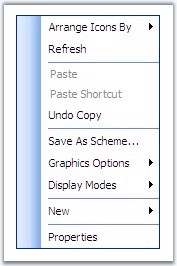
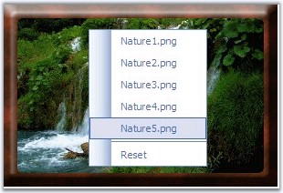
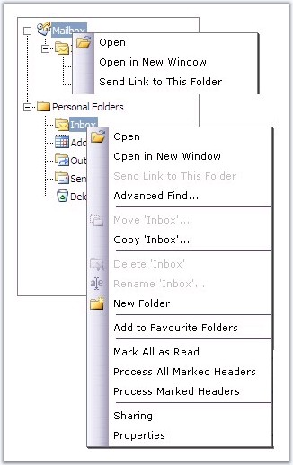

The context menu pops-up at the point where the user right-clicks on the page. You can show a context menu on right-clicking anywhere on the application, or even confine to pop-up the menu only inside a control.
Context Menu can be classified into the following types: Simple, ControlSpecific and Custom. You can create any type of context menu just by setting the ContextMenu property to one of the appropriate options, as shown below.
|
Property |
Description |
|
ContextControlID |
Specifies id of the element to which, context menu should be bounded. |
|
ContextMenu |
Specifies the type of context menu to use. Default value is None. The options included are as follows: · None · Simple · ControlSpecific · Custom |
This section covers information on the following topics.
5.4.1.2.12.1.1 Simple Context Menu
The simple context menu appears when you right-click anywhere on the page. To utilize a simple context menu in your project, just set the ContextMenu property as Simple.
|
[ASPX]
<syncfusion:Menu ID="Menu1" runat="server" Layout="Vertical" CustomCSS="css/MenuDesign.css" ContextMenu="Simple"> <Items> <!--Add Menu items--> </Items> </syncfusion:Menu> |

Figure 233: Simple Context Menu
5.4.1.2.12.1.2 ControlSpecific Context Menu
The Menu control enables the flexibility to add ControlSpecific context menus. When the user right-clicks on the specified control, the ControlSpecific context menu appears. You can have multiple context menus on a single web page, associated with different controls. To utilize a ControlSpecific context menu in your project, set the ContextMenu property as ControlSpecific, and ContextControlID to the 'id' of the corresponding control . The context menu appears when you right-click anywhere inside your control.
|
[ASPX]
<syncfusion:Menu ID="Menu1" runat="server" Layout="Vertical" ContextControlID="Image1" ContextMenu="ControlSpecific" ControlRootCSSClass="" CustomCSS="css/MenuDesign.css" DynamicPanelCSSClass="menuRootPanel" StaticPanelCSSClass="menuRootPanel" OnItemSelect="Menu1_ItemSelect"> <Items> <!--Add Menu items--> </Items>
</syncfusion:Menu> <asp:Image ID="Image1" runat="server" ImageUrl="images/Nature1.png" /> |

Figure 234: ControlSpecific Context Menu
5.4.1.2.12.1.3 Custom Context Menu
This option can be used to set a node / item specific context menu, or cell-specific context menu, for controls like TreeView and Grid. To do this, set the ContextMenu property to Custom.
Please follow the below steps to display different context menus for individual tree nodes of TreeView Control, as shown in the below screenshot.

Figure 235: Associating Different Context Menus to Different Nodes
1. Add the required menu items to be used as the Context Menu and set the ContextMenu property as Custom.
|
[ASPX]
<syncfusion:Menu id="Menu1" style = "Position: Absolute;" runat = "server" ContextMenu = "Custom" ClientObjectID = "Menu1" Layout = "Vertical" CustomCSS = "css/menu_std_design.css" > <ItemLooks> <!--Apply the required style settings--> </ItemLooks> <Items> <!--Add menu items--> </Items> </syncfusion:Menu> <syncfusion:Menu id = "Menu2" style = "Position: Absolute;" runat = "server" ContextMenu = "Custom" ClientObjectID = "Menu2" Layout = "Vertical" CustomCSS = "css/menu_std_design.css" > <ItemLooks> <!--Apply the required style settings--> </ItemLooks> <Items> <!--Add menu items--> </Items> </syncfusion:Menu> |
77. Set ClientSideOnContextMenu property of the TreeView control to the script function to be called.
|
[ASPX]
<syncfusion:Treeview id = "Treeview1" runat = "server" EditNode = "False" Width = "233px" Height = "300px" ExpandOnRowClick = "False" ClientSideOnContextMenu = "NodeOnContextMenu(this)"> <Items> <!--Add tree nodes--> </Items> </syncfusion:Treeview> |
Here NodeOnContextMenu(this) function is assigned to the ClientSideOnContextMenu property, which specifies the client-side function to be called on right-clicking a node.
78. The below script function can be used to display a specific menu as a pop-up, on clicking the respective node.
|
[JavaScript]
function NodeOnContextMenu( oItemData ) { var bShowMenu = false; var oEvent = oItemData.Event; switch( oItemData.Text ) { case "Node1": Menu1.ShowContextMenu( null, null, oEvent, oItemData ); break; case "Node2": Menu2.ShowContextMenu( null, null, oEvent, oItemData ); break; default: bShowMenu = true; break; } return bShowMenu; } |
Here, ShowContextMenu method is used to pop the menu that is called using the ClientObjectId.
You can associate the same context menu to Multiple controls, by specifying the ID of all controls in the ContextControlID of Menu control, by making use of Separators.
|
[ASPX]
<syncfusion:Menu ID="Menu1" AutoFormat="Office2007 Blue" Layout="Vertical" ContextMenu="ControlSpecific" ContextControlID="Image1, Image2, Image3" runat="server"> <Items> <!--Add Menu items--> </Items> </syncfusion:Menu> |
Figure 236: Associating Same Context Menu to Multiple Controls
The ContextData property of the client-side and server-side, is used to retrieve control data for which the context menu is shown.
Server-Side
|
[C#]
protected void Menu1_ItemCommand(object oSender, Syncfusion.Web.UI.WebControls.Tools.MenuCommandEventArgs e) { Label1.Text = string.Format( "You have clicked on '{0}' of '{1}' element.", e.Item.Text, e.ContextData ); } |
|
[VB]
Protected Sub Menu1_ItemCommand(ByVal oSender As Object, ByVal e As Syncfusion.Web.UI.WebControls.Tools.MenuCommandEventArgs) Label1.Text = String.Format("You have clicked on '{0}' of '{1}' element.", e.Item.Text, e.ContextData) End Sub |
Client-Side
On the client-side, the ContextData property can be accessed through the ClientObjectId of Menu control.
|
[JavaScript]
function OnContextMenuItem( oData ) { var sMessage = "You have clicked on '" + oData.Text + "' of '" + _sfMenu.ContextData + "' element."; alert(sMessage); return false; } |